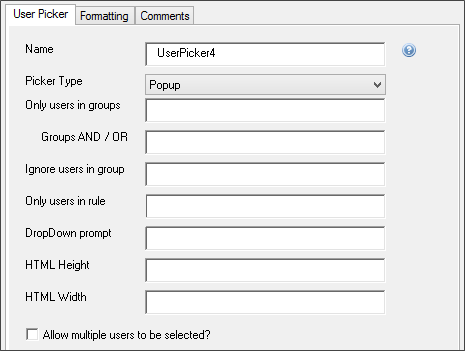
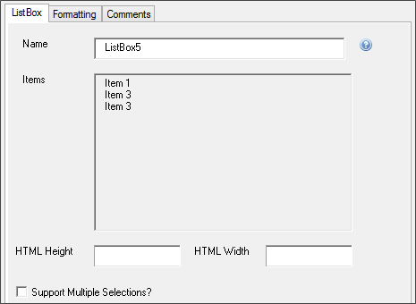
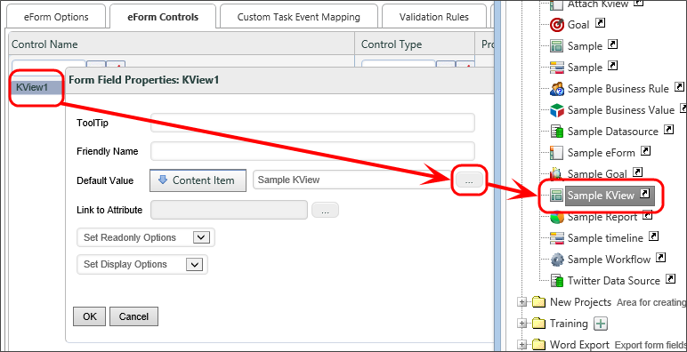

This section of the menu contains other form controls that can be used to display password fields, list controls, user/group/content pickers, etc.
For users of Process Director v4.06 and higher, all Picker controls incorporate type-ahead selection rather than selecting from a pop-up list, dropdown, or Listbox control. You can begin to type the name of a user, group, etc., and Process Director will display a dropdown that matches the value you type into the Picker control.

User and Group pickers allow the Form user to select users or groups from the server’s Active Directory.

The User or Group Picker’s options allow you to configure filter data as well as display data. The pickers can be displayed in the Form as dropdowns, pop-ups, etc.

You can specify that only users in certain groups show up in the user picker by specifying a comma-separated list of groups in the “Only users in groups” field. If you type “AND” into the “Groups AND / OR” field, then only users belonging to all the specified groups will appear as options in the user picker controller. If you type “OR”, then users belonging to any of the specified groups will appear as options in the user picker control.
The “dropdown prompt” is the text that is shown before an option has been selected in the dropdown. Common values might be “<Select User>” or “<Select Group>”
The user picker will not list users who are members of groups specified in the “Ignore users in group” field, and the user picker will only list users returned by the Business Rule specified in the “Only users in rule” field (if that field is set).

The Content Picker control allows the user to select objects within the content list (e.g. processes, forms, etc.)

The Content Picker options allow you to set the control’s name, the type of object it can pick from the Content List (Document, Folder, Rule, KView, Workflow, WF Instance, form, Form Instance, Dropdown, DB connection, Process Timeline, Project Instance, or Process), the extension the object must have, and the folder that the content picker starts in when the user clicks “Browse.”


The Control Picker is a dropdown list that contains the names of all the controls that are placed on the Form. The Control Picker does not have a visual placeholder, and is placed on the page in Process Director's markup language as:
{ControlPicker:ControlName, ControlType=, DropDownPrompt=}
When placed on the page without any modification, the control will appear as a dropdown control.

You can customize the prompt that appears in the dropdown by changing the DropDownPrompt attribute. For example, using the following markup:
{ControlPicker:ControlName, ControlType=, DropDownPrompt="Select One"}
Will cause the control to appear as follows:


Selecting this menu item inserts a form control that will display a multi-line list input control where the cursor is located. The form control looks as follows:

The ListBox control contains a list of checkboxes in a scrollable frame, where multiple checkboxes may or may not be selected. You can configure the name of the control, as well as its content, height, width, and formatting in its properties window. The height and width must beset using CSS syntax (e.g. 20px, 10%, 3em, etc.)

The contents of a ListBox can also be set using a dropdown object.

The Slider control allows you to select a numerical value using a slider.

In the slider’s property window, you can configure its size, minimum and maximum values, and whether or not the handles and tick marks are displayed. The SmallChange property determines how much the value of the slider changes when the adjacent arrows are clicked, and the LargeChange property determines how much the value of the slider changes when a position on the slider is clicked.


The Rating control allows the user to set a rating out of a possible number of stars.

The properties window for the Rating control allows you to configure the name of the rating control, the maximum number of stars, and whether the user can select half stars or not.


The Lock Form control allows the user to see whether a form is locked and, if the control is configured to allow it, unlock it.

The properties window of the Lock Form control allows you to set the text shown to the user when the form is locked, and optionally allow the user to unlock the form. It can also be configured to periodically check to see whether the form has been locked after a number of seconds specified in the Polling Seconds property. To put the name of the user who locked the control into the Lock Text text, use the {FORM_LOCK_USER} system variable.


The “Calculation” Form control displays a number that is the result of a calculation involving any combination of the values of Form controls, constants, and the multiplication, division, addition, and subtraction operators (“*”, “/”, “+”, and “-“ respectively).
In the Form builder, the calculate control will look like the following, though only the number will be displayed to the Form user:

Name: The name of the control.
Formula: The mathematical formula that produces the calculation.
FormatString: The built-in .NET Format String used to format the result. For the syntax of the available .NET Format Strings, please refer to Microsoft's MSDN documentation topic for Standard Numeric Format Strings.
Style: A CSS style tag to format the control, e.g., "font-weight: bold;"
The algorithm can incorporate system variables and form fields. For example, to add the value of two form fields, use the following equation, substituting the appropriate control names:
{#FORM:fieldA} + {#FORM:fieldB}


The Date Difference control displays the number of days, hours, minutes, etc., between two dates. This control has no visual placeholder and is placed on the page in Process Director's markup language, with the following syntax:
{DateDiff:ControlName, Date1=, Date2=, Type=}
There are three attributes that must be provided to enable the control to display the proper value in the Form:
When properly configured, the Date Difference control will display a simple text number reflecting the value of the date difference. For example the following Date Difference control configuration:
{DateDiff:datediff5, Date1="1/1/2015", Date2="1/3/2015", Type="Hours"}
Will result in the control displaying "48" when the form runs.
In addition to using hard-coded dates as one of the date attributes, as shown in the example above, you can also use the values of date controls as the dates to use in calculation, using the syntax:
Date1={FORM:SubmittedOn}
In this example, the start date of the date difference calculation will be the value of a DatePicker control named "SubmittedOn".

The invite control allows a user to invite other users in Process Director to a task. The inviter can select to add the invitees to perform the task with the inviter, or to reassign the task from the inviter to the invitee.
The Invite control will appear as a user picker in the Form, as shown below.
The properties tab contains a number of options to configure the Form control.

|
PROPERTY |
DESCRIPTION |
|---|---|
|
Name |
The name of the control. |
|
Text |
Replaces the default text on the picker's button ("…"). |
|
Picker Type |
Determines whether the user picker will show as a pop-up dialog box, or a dropdown control. |
|
Only user in groups |
The name of Process Director user groups from which the users will be displayed. This is useful to restrict the users that can be selected. |
|
Ignore users in group |
The name of Process Director user groups from which the users will not be displayed. |
|
Dropdown Prompt |
A brief prompt message that will appear in the dropdown, if the Dropdown picker type is selected. |
|
HTML Height |
The desired height of the control in pixels. |
|
HTML Width |
The desired width of the control in pixels. |
|
Cancel Inviting User? |
Checking this box will remove the task from the user's Task List when others are invited. |
|
Allow multiple users to be selected? |
Allows more than one user to be invited. |
|
Reassign the inviter? |
Reassigns the task to the inviter. |
 Use of the Scheduler module has largely been deprecated in the product. BP Logix recommends using the Goal object for scheduled most operations that were formerly implemented via the Scheduler Module.
Use of the Scheduler module has largely been deprecated in the product. BP Logix recommends using the Goal object for scheduled most operations that were formerly implemented via the Scheduler Module.

The Scheduler control is part of the Process Director Scheduler Module (PDSM), which is used to launch processes (Workflows or Process Timelines) at pre-defined intervals within a specified window of time.

Complete details about the scheduler component are available through the Scheduler Module guide.

The HTML Code control allows you to insert an HTML code snippet into the Form definition. You can include system variables in the code snippet, and Process Director will parse them properly. The control has a character limit of 5,500 characters, so if you have a lengthy HTML snippet, you should break it up across multiple HTML controls to ensure that you don't exceed the character limit.
If your inserted HTML includes { or } characters, you must leave the control's Name property blank. Otherwise the "{" and "}" characters will be interpreted as System Variables.
In addition to normal HTML, you can include JavaScript. So, to send an alert that greets the user, you could say:
<script>
Alert("Hello {CURR_USER}");
</script>
If you create a javascript function called “bpUserJavaScript” and put it on the form inside an HTML control - it will run on the initial Form Load and all Postback events, enabling you to insert JavaScript into these events.
<script>
function bpUserJavaScript()
{
//Script code for Load and Postback goes here.
}
</script>
This feature enables you to insert complicated client-side JavaScript that sets a control's state on Postback. In the example below, a notional Form has a Checkbox control that is set as en event field to fire the Postback. On Postback, the bpUserJavaScript function runs to control the state of the Checkbox .
<script>
var SaveClick;
function bpUserJavaScript()
{
SaveClick = CurrentForm.FormControls["CheckBox2"].onclick;
CurrentForm.FormControls["CheckBox2"].onclick = NewClick;
}
function NewClick()
{
if (confirm("Are you sure?"))
{
if (typeof(SaveClick) != "undefined" && SaveClick)
{
SaveClick();
}
}
else
{
CurrentForm.FormControls["CheckBox2"].checked =
!CurrentForm.FormControls["CheckBox2"].checked;
}
}
</script>
You can also place ASP.NET server –side controls in this tag. For example:
<asp:TextBox runat="server" ID="ControlName" />
Server-side ASP.NET controls also act as normal BP Logix form fields, allowing you to reference them with System Variables and through Process Director. You can place an HTML control on a Form, leave the Name property blank, then place the ASP.NET control markup in the HTMLString Property. Entering a Name for the HTML control will cause Process Director to treat it like a Process Director Control and override the ASP.NET control. Leaving the Name property blank will cause Process Director to take the HTML markup for the ASP.NET control, and display the ASP.NET control in the Form. By wrapping a native ASP.NET control in an unnamed HTML control, Process Director supports the use of any native ASP.NET control on a Form.
You can stylize your HTML with CSS, either in the tag you want to stylize or in a separate <style> tag.
<!-- You can do this: -->
<p style="text-align: center;">Text</p>
<!-- Or this: -->
<style type="text/css">
p{
text-align: center;
}
</style>
To use the ASP.NET controls, you must have Process Director v3.5 or higher.

The Datasource Picker control displays a dropdown list of data sources that have been added to the Process Director installation. The control has no visual placeholder and is placed on the page in Process Director's markup language, with the following syntax:
{DSNPicker:ControlName,DataSourceType=SQLServer|Oracle|SharePoint}
The DataSourceType attribute accepts one of three values to determine the database type from which to draw the data sources: SQL Server, Oracle, or SharePoint.
At runtime, the control appears as a standard dropdown list.


The Category Picker allows the user to select from one or more categories on Process Director.

The category properties can be accessed by double clicking the category control in MS Word. You can configure the name of the category picker, and the category that the user can start his search at when he clicks on the category picker. You can also allow the user to select multiple categories.

The attribute picker allows the user to select an attribute on Process Director.

The attribute properties can be accessed by double clicking the attribute control. You can configure the control’s name, and the category that the user will start searching in when he clicks the attribute picker on the Form.

The Radio Button List control returns a single value from a list of radio buttons. The control has no visual placeholder and is placed on the page in Process Director's markup language, with the following syntax:
{RadioList:ControlName, RepeatDirection=Horizontal|Vertical, item=, item=}
The RepeatDirection modifier enables you to select whether you wish the radio buttons to be arrayed horizontally across the page, or vertically in a single column. Examples of each RepeatDirection modifier are shown below.
The Item modifiers enable you to add as many items as needed to the RadioList, with each Item modifier representing a radio button item in the RadioList. The Item modifier can be declared in one of two ways:
item="value". The return value for the selected radio button will be the literal text of the option item.item="Display Text":value. In this case, the user will see the display text when the RadioList is displayed on the Form, but t he return value for the selected radio button will be the value component of the Item modifier.One item to note in the examples below is that one radio button item uses the term "3rd". Microsoft Word will, by default, place the "rd" in superscript, so that it appears as "3rd". You should eliminate the superscripting, and use standard text rather than superscript to avoid formatting problems.
{RadioList:ControName, RepeatDirection=Horizontal, item="Item One", item="Item 2", item="The 3rd Item"}

{RadioList:ControlName, RepeatDirection=Vertical, item="Item One", item="Item 2", item="The 3rd Item"}

{RadioList:ControlName, RepeatDirection=Vertical, item="Item One":1, item="Item 2":2, item="The 3rd Item":3}

This Form control is used to identify the area(s) where error messages are displayed on the Form. If this control is not present on a Form, then the error messages are placed at the top and bottom of the form. This control has no visual placeholder, and is placed on the form using Process Director's markup syntax as:
{FormErrorStrings}
This Form control is used to identify the area(s) where informational messages are displayed on the Form. If this control is not present on a Form, then the informational messages are placed at the top and bottom of the form. This control has no visual placeholder, and is placed on the form using Process Director's markup syntax as:
{FormInfoStrings}

Knowledge view controls allow you to display a knowledge view within a Form, or within a popup window.

The properties window allows you to configure the name of the control, as well as its width and its height (either as percentage points or pixels). The “Type” dropdown can be set to Iframe or Pop-Up. If “Type” is set to Iframe, the Knowledge View will display inline, on the Form. If it is set to Pop-Up, the Knowledge View will be displayed in a pop-up window. You can also send QueryString parameters to the Knowledge View.

To specify which Knowledge View this control will display, in the Form “Properties” page on Process Director, set the default value of this control to the content item for the Knowledge View you want displayed.
QueryString Parameters can also be set in the QueryString Parms property, as described in the KView control tag section of this document.


The Show Report control displays a report in a Form. The Show Report control can display a report in a variety of ways, configurable in the control’s properties.

The properties window allows the user to configure the name of the control, the text the Show Report button displays, and the height and width of the report. It also allows the user to pass QueryString parameters to the report, configuring the data it returns. Separate parameters should be separated by new lines, using the VariableName=Value format to specify parameters and their values.

The Type dropdown allows the report to be displayed in the Form in three different ways. The report can be displayed in an iframe in the Form, as a popup, or as an image embedded in the Form. The image is static, but the data it returns can still be configured using QueryString parameters.


The Label control adds a piece of text to the Form that can be dynamically changed by accessing it via the control name.

The Label configuration properties can be accessed by double clicking the label control in the form builder. You can configure the label’s name, its default text, and its CSS styling.
Labels used for accessibility purposes must use the Associated Control property to specify the Name property of the data entry control that should be associated with the label. At run-time, the Label will be associated with the specified data entry control for ADA Compliance.

The hotlink control creates a link to a specified URL. These are often placed in emails to link the user to the task he needs to complete. As such, one will usually set the hotlink’s URL dynamically using System Variables.

In the hotlink control’s properties window, you can set the name of the hotlink, the text displayed to the user, the URL the user is directed to, the CSS style of the link, and the JavaScript function triggered when the user clicks on the link. You can optionally make the hotlink open in a new window.

The Text field sets the text displayed on the form.
The URL field sets the URL to which the hotlink control will link.
The Style field determines CSS styling for the link.
The OnClientClick field specifies JavaScript code to be executed when the user clicks on the link. It must be encased in quotation marks.

The Audit Button control enables the user to view a history of the controls whose values have changed on the Form, so long as the Audit Form Changes checkbox is checked on the Form properties tab in Process Director.

The Audit Button’s properties can be accessed by double clicking the button in the form builder.

You can configure the control’s name, and the text displayed on the button.
Using the Control Name, Step Name, and Activity Name fields, you can filter the audit history to only display Form changes relevant to the specified controls, activities, and steps. For instance, if you set the Activity Name property to "Step 1", then only auditable activities that occur during the activity named "Step 1" will appear in the control at run-time. These three fields can accept multiple values by entering a comma-separated list of items. You can also set any of these field properties to a System Variable, instead of manually adding values to these fields. As an example, you can use a Business Rule to provide these values, and enter the System variable name for a Business Rule in each field, e.g., {RULE:BusinessRuleName}. You could then set the Business Rule to return the step completion date, so that you only capture changes made after that point in the process. Using a Business Rule enables you to change the filter values by editing the Business Rule, instead of re-opening the Form template and modifying the template.
If you check the Show field changes in tooltips... check box, the Audit control will not be displayed at run-time. Instead, audit information will be displayed in a tooltip for the form fields when the user hovers the mouse over the relevant fields.

The Image Control inserts an image at a specified URL into the Form.

The Image Control properties can be accessed by double clicking on the control in the Form builder. The properties allow you to configure the name of the image control. The Image URL field specifies the URL at which the image can be found. If text is entered in the URL field, the image will redirect the user to that URL if the image is clicked on. You can check the checkbox to open the link in a new window.
The image can also be stylized using CSS, and its height and width can be set in pixels.

This control enables a user to delegate tasks to other users, remove users from tasks, and perform other process management functions without going to the process’ administrator’s page.
The Manage Users tab of the properties window for this control allows you to set the name, button text, and group name for the Manage Users control. You can also specify what features the Form user is allowed to access. Through the Step Name and Activity Name textboxes, you can make it such that the reassign button only appears for a specific set of activities or steps.
Checking the Start Pending Users Only checkbox makes it such that, if the step is restarted, only users who have not completed the task in this workflow instance will be asked to complete it.

The Button Properties tab allows you to configure the URL of the button image and the style of the button, as well as the behavior upon clicking the button.
For information on this control, see the section of this document entitled EmailData Control.
For information on this control, see the section of this document entitled Complete Links in an Email.

The Comment Start and Comment End controls are used to define an area in the Form to act as a comment. A commented area will only display when building the Form in MS Word: any controls or text put inside the commented area will not affect the Form once it is deployed.